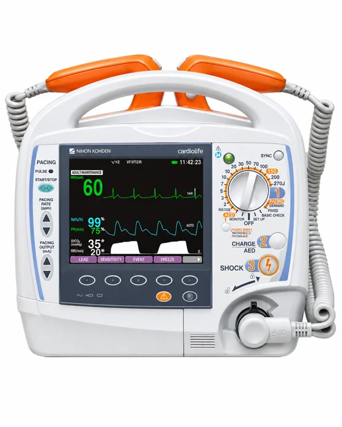
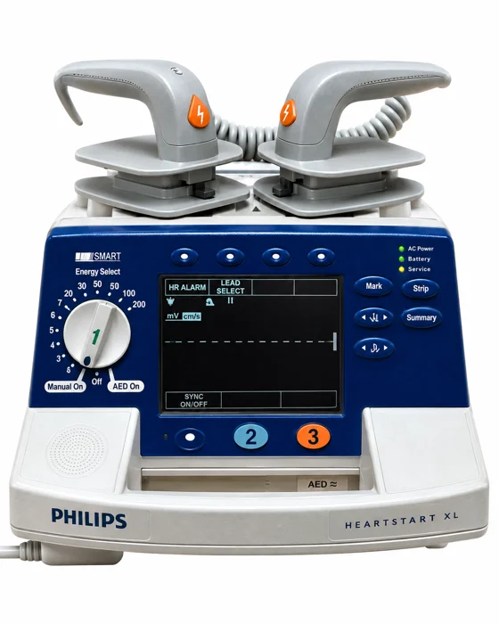

ACLS Instructor · Chapter 6
心臟停止之治療Management of Cardiac Arrest
VF / pVT 與 PEA / Asystole
講師：台北市立聯合醫院陽明院區 急診主治醫師 懷顥
原著章節：胡勝川、楊久滕〈第 6 章 心臟停止之治療〉｜依 2025 AHA CPR & ECC 指引逐項核對
開場：本章以 2025 年成人心臟停止流程為主軸。心電圖為動態示意圖，可在 Megacode 模擬頁由講師切換心律。標示 ⚠ 的地方是教材與 2025 AHA 指引寫法不同、講課時要更正的地方。
Contents · 目錄
目錄
圖例：Class 1 建議 2a 合理 2b 可考慮 3 無益 / 有害 ✓ 已核實 ⚠ 需更正 NEW 2025 點選章節可直接跳頁
Chapter 一 · Algorithm
01
成人心臟停止流程 叫叫 CABD → 流程圖 · 環形圖
流程 · 概念
成功的急救：系統 / 流程 / 團隊
1 快速辨識 意識不清、沒有正常呼吸 → 啟動團隊
2 立即高品質 CPR 一切的基礎，貫穿全程
3 可電擊 → 儘早去顫 不可電擊 → 儘早 epinephrine
4 ROSC 後照護 支持治療 ＋ 病因治療（第 8 章）
優先順序 1 → 2 → 3 是能增加存活的處置；打點滴、給藥、放進階呼吸道不能影響 前三項。
多數成人心臟停止是心因性 （心肌梗塞、電傳導異常）；非心因性如呼吸衰竭、中毒、肺栓塞、溺水，病因治療很重要
多數 ACLS 處置能增加 ROSC，但未證實增加存活出院
系統：辨識與啟動；流程：圖 6-1 / 環形圖；團隊：本章最後的小站教學。強調「其他處置往後放」：插管、打 IV 都不能讓壓胸中斷。
流程 · BLS → ACLS
叫叫 CABD：接到流程圖
叫 拍肩呼叫
→
叫 求救、啟動團隊 第二位施救者：儘早取得去顫器、貼上貼片
→
C 確認脈搏 10 秒內 第一位施救者：不論有無目擊，先壓胸；不確定有脈搏 → 馬上壓胸
→
A · B 打開呼吸道
→
D 貼上監視器 / 去顫器 已有監視器：開始 CPR 前先判讀，VF / pVT 立刻電擊
＝ 流程圖 ① 「開始 CPR · BVM 通氣給氧 · 接監視器 / 去顫器」→ 接著問 可電擊？
BLS 的叫叫 CABD 做完，就是流程圖的第 ① 格：已經在壓胸、BVM 給氧、接上去顫器。下一步就是判讀心律、問可不可以電擊，從這裡分成上下兩排。
流程 · 圖 6-1
流程圖：成人心臟停止處置 2025
依教材圖 6-1（2025 年更新）重繪為上下兩列：上排可電擊、下排不可電擊。數字對應原圖方框編號。每一個「可電擊？」都是 2 分鐘 CPR 後的心律檢查：上排 ⑤ 前的檢查若轉為不可電擊（否），接到 ⑩；下排檢查若轉為可電擊（是），接到 ⑤。
流程 · 圖 6-2
環形圖：每 2 分鐘一圈
恢復自發性循環（ROSC）
復甦後照護
開始 CPR
• 開始 BVM 通氣和給氧
• 接上監視器／去顫器
檢查心律
如 VF/VT
予電擊 ⚡
2 分鐘
藥物治療
建立 IV/IO 路徑 每 3–5 分鐘予 Epinephrine 頑固型 VF/VT 予 Amiodarone （或 Lidocaine）
考慮進階呼吸道 量化二氧化碳濃度監測 治療可逆原因
持續 CPR
持續 CPR
監測 CPR 品質
一圈 = 2 分鐘 CPR → 檢查心律 → 可電擊就電擊 → 立刻回到壓胸
內圈三件事：藥物 、進階呼吸道與 ETCO₂ 、治療可逆原因
外圈全程：持續 CPR、監測 CPR 品質
出口 出現 ROSC 徵象（ETCO₂ 突然上升、動脈波形、脈搏）→ 復甦後照護 （第 8 章）
依講師提供的環形圖重繪。環形圖適合當作團隊節奏：每 2 分鐘一圈，計時員負責報時。
Chapter 二 · Shockable
02
可電擊心律 VF / pVT · 電擊 · 藥物 · 頑固性 VF
可電擊心律 · 認識
可電擊心律：VF / pVT
認得它 VF ：沒有組織的心電活動，雜亂無章、沒有 QRSpVT ：有組織的寬 QRS（單型或多型），摸不到脈搏 才算救活的關鍵 高品質 CPR ＋ 儘早去顫 去顫越晚，存活越低 藥物、呼吸道都排在後面 口訣：電擊 → CPR → 檢查 電擊後不檢查脈搏 ，立刻壓胸 2 分鐘 2 分鐘後再停下來檢查心律 仍可電擊 → 再電擊 問學員：VT 一定要電擊嗎？要先摸脈搏，有脈搏的 VT 走 tachycardia 流程。這一節的順序：先認得可電擊心律，再講電擊，再講藥物，最後是頑固性 VF / pVT。
可電擊心律 · 電擊
電擊：位置、安全、口令
病人右 病人左 前側 （右上、左下）右鎖骨下 ＋ 左腋中線、心尖 病人右 病人左 前後 通常用於嬰幼兒 左胸前（心前區）＋ 背後左肩胛下 實線：胸前 虛線：背後。兩種都可以，選最快、最不影響壓胸的。
先檢查胸前：NTG 貼片 要撕掉（火花、燒傷）；皮下節律器 避開即可
電擊板要塗導電膠，以約 25 磅 力量下壓
充電完成時大聲喊：「你離開、我離開、大家都離開」
2025 BLS 補充 貼片位置可以調整胸罩而不必脫除，減少女性病人電擊延誤。

Nihon Kohden cardiolife 
Philips HeartStart XL 依去顫器上的 1、2、3 操作 ① 轉旋鈕選能量（手動模式）② 按 Charge 充電（充電時持續壓胸）③ 喊「大家都離開」→ 按 Shock 電擊同步電擊（SYNC）是心搏過速用；心臟停止用非同步。
貼片兩種標準位置：前側（右上、左下）與前後。教材另列前、左肩胛下、前、右肩胛下兩種變化，臨床上很少用，這裡不列。前後也是頑固 VF 時「換向量」的做法。
可電擊心律 · 能量
電擊：能量與時機
建議 教材 2025 AHA 雙相波：依廠牌建議能量（120–200 J）；不知道時用最大能量 — 2b 第二次與之後能量至少相同，可考慮更高 IIb 2b 雙相波優於單相波；單次電擊優於連續電擊 — 2a 充電時持續壓胸 ，直到充電完成 I — 目擊或有監視器的 VF / pVT：立即去顫 IIa — 電擊後立即壓胸 ，不先檢查心律或脈搏 IIb —
「—」表示 2025 AHA Part 9 沒有列為獨立編號建議，沿用先前的做法。
可電擊心律 · 藥物
可電擊心律：藥物
0 分 2 分 4 分 6 分 8 分
⚡1
CPR · 建立 IV/IO
⚡2
CPR · Epi 1 mg
⚡3
CPR · Amio 300 mg
⚡4
CPR · Epi 1 mg
⚡5
CPR · Amio 150 mg
Epinephrine 2a 第 2 次電擊後開始 1 mg IV/IO，每 3–5 分鐘（每兩輪 CPR） Amiodarone 2b 第 3 次電擊後 300 mg 下一次 150 mg Lidocaine 2b 可替代 amiodarone 首劑 1–1.5 mg/kg 之後 0.5–0.75 mg/kg，最多 3 mg/kg ROSC 之後 指引：常規預防性給藥證據不足 ，反覆發作才考慮 教材：可考慮用藥（如 amiodarone）維持 藥都在壓胸中推，不需要為了給藥停止 CPR。ROSC 後的抗心律不整藥：2018 AHA focused update 只對特定情況的 lidocaine 給 2b，不是常規。
可電擊心律 · 頑固性
頑固性 VF / pVT：DSD、ECPR 連續 ≥ 3 次電擊仍持續
先回到基本 CPR 品質：看 ETCO₂、換手 藥有沒有按時給 找 5H5T 冠狀動脈栓塞 → ROSC 後緊急 PCI ；CPR 中打 tPA 不建議 換向量 / 雙重連續去顫（DSD） 換向量：前側 改為 前後 DSD：前側 ＋ 前後 兩組貼片、兩台去顫器幾乎同時 電擊 2025 AHA：兩者效用尚未確立 2b ECPR（VA-ECMO） 傳統 CPR 救不回來時的橋接 適合：目擊、有旁人 CPR、可電擊心律、可逆原因、能快速接上 ECMO 要早啟動 ，依院內 ECPR 流程；轉送時可用機械 CPR 教學重點 DSD 與換向量在 DOSE-VF 試驗顯示可能有益，但樣本數小，2025 AHA 列為 2b；ECPR 的納入條件依各院流程而定。
ECPR 的適應症各院不同，常見條件：年齡較輕、目擊倒下、有旁人 CPR、初始心律可電擊、疑似可逆病因（如冠狀動脈阻塞），且能在短時間內建立 ECMO。
Chapter 三 · PEA / Asystole
03
PEA / Asystole 儘早 epinephrine · 窄 / 寬 PEA · 5H5T
不可電擊心律 · 認識
不可電擊心律：PEA / Asystole
⚠ 竇性心律僅為示意 ：PEA 可以是任何非電擊心律（如 3° AVB、IVR、ST），重點是摸不到脈搏
認得它：三種狀態 Pseudo-PEA ：有電氣、有收縮 ，但輸出太弱摸不到脈搏（超音波看得到心跳）True PEA ：有電氣、無收縮 Asystole ：無電氣、無收縮（一直線）流程 判讀為 PEA / Asystole → 立刻恢復 CPR 找可逆原因 （下頁、5H5T）變成有組織的心律 → 摸脈搏 ；有脈搏 → 量生命徵象、復甦後照護 Epinephrine 判讀後儘早 給 1 mg IV/IO 2a 之後每 3–5 分鐘（每兩輪 CPR） 增加 CPR 時心肌與腦部血流 → ROSC 不要電擊 電擊 asystole / PEA 反而降低 ROSC ；一直線要換導程、調高增益，注意細 VF 。
問學員：PEA 那條看起來像什麼？像竇性心律，只是摸不到脈搏，所以 PEA 不能只看監視器判斷。Pseudo-PEA 用超音波或動脈導管才分得出來，ROSC 機會較高。
不可電擊心律 · PEA
PEA：窄 QRS vs 寬 QRS
窄 QRS ：多為機械性 問題最常見低血容 ；其次心包填塞、張力性氣胸、大量肺栓塞
藥物過量：β-blocker、鈣離子阻斷劑
寬 QRS ：心肌功能或傳導不正常，多為代謝性 問題嚴重高血鉀、酸血症
藥物過量：三環抗憂鬱劑
病史線索：腎病 → 高血鉀；精神病史 → 藥物中毒。
不可電擊心律 · 找原因
5H5T：可逆原因 口訣：溫氧容酸鉀 心肺毒氣包
怎麼找：病史 （SAMPLE）、理學檢查 （head-to-toe）、抽血 （VBG、K）、超音波 （e-FAST）
原因 線索 處置 Hypovolemia 低血容出血、脫水、窄 QRS 快速 PEA 晶體輸液；失血 → 輸血 Hypoxia 缺氧呼吸衰竭、溺水、呼吸道阻塞 進階呼吸道、適當給氧與通氣 Hydrogen ion 酸中毒酮酸中毒、腎衰竭、長時間停止 適當通氣；考慮 NaHCO₃ （常規無益） Hyper- / Hypokalemia 洗腎、腎病史、橫紋肌溶解；寬 QRS、尖 T 高血鉀：鈣、NaHCO₃、insulin＋glucose Hypothermia 低體溫環境暴露、溺水 回溫（第 12 章） Tension pneumothorax 外傷、呼吸器、單側呼吸音消失、氣管偏移 針刺減壓 → 胸管 Tamponade 心包填塞外傷、術後、頸靜脈怒張；超音波右心塌陷 心包膜穿刺 Toxins 中毒藥物史、精神病史、現場藥瓶 解毒劑、毒物諮詢 Thrombosis, pulmonary DVT、術後、長期臥床、避孕藥、長途飛行；超音波右心鼓脹 考慮血栓溶解：alteplase 50 mg bolus ，15 分鐘後可再 50 mg；之後持續 CPR 60–90 分鐘 Thrombosis, coronary 胸痛、STEMI、反覆 pVT / VF ROSC 後緊急 PCI ；考慮 ECMO 橋接；CPR 中打 tPA 不建議
床邊超音波 2025 AHA 診斷可逆原因、預測預後：效用尚未確立 2b ；有經驗者可考慮，前提是不中斷 CPR （利用心律檢查的 10 秒錄影、回放判讀）。
表格整理自教材本文；POCUS 頁併入本頁；處置欄的高血鉀、心包填塞為補充。肺栓塞血栓溶解的建議等級請以 2025 AHA Part 10（特殊狀況）核對，詳見第 12 章投影片。
Chapter 四 · During CPR
04
CPR 期間的處置 高品質 CPR · IV / IO · 藥物 · 呼吸道 · ETCO₂
CPR 期間 · 高品質 CPR
高品質 CPR：一切的基礎
五個要素
壓得夠深 5–6 公分
壓得夠快 100–120 次/分
胸部完全回彈
減少中斷 ：壓胸時間比例越高越好每 2 分鐘換手，或疲勞時提早換 誰在看品質
CPR 教練 （電擊者兼任）回饋裝置、ETCO₂、動脈血壓（見 ETCO₂ 頁）
只有這些時候可以停止壓胸 分析心律、去顫電擊、檢查脈搏、壓胸換手、氣管插管。其餘處置都要邊壓邊做 。
這頁只講壓胸本身。通氣比例、ETCO₂ 分別在呼吸道頁與 ETCO₂ 頁。
CPR 期間 · 給藥途徑
給藥途徑：IV 優先 ⚠ 2025 更新
途徑 教材 2025 AHA 說明 周邊靜脈 IV IIa 1 首選藥物動力學最可預測 骨內 IO IIb 2a IV 失敗或不可行時；回溯研究 IV 臨床療效較好 中心靜脈 IIb 2b 受過訓練者、IV 與 IO 都失敗時；耗時且可能中斷 CPR 氣管內 IIb 不建議 血中濃度低、無法預測；ROSC 與存活較差 心內注射 不建議 不建議 需高度技術、可能造成傷害
✓ 2025 AHA IV 是心臟停止給藥的第一線 ；IV 不可行或延誤時，IO 是合理的替代，避免延誤 epinephrine（尤其不可電擊心律）。
這是 2025 改變最明確的一頁：IV 由 2a 升為 1、IO 由 2b 升為 2a、氣管內給藥移除。
CPR 期間 · 其他藥物
其他藥物：哪些不要常規做 NEW
藥物 / 處置 2025 AHA β-blocker、bretylium、procainamide、sotalol 2b 效益不明高劑量 epinephrine；vasopressin（單用或合併） 3 無益 類固醇 2b 效益不明常規鈣 3 無益 常規碳酸氫鈉 3 無益 常規鎂 3 無益 Head-up CPR（研究以外） 3 無益 心臟停止中常規電節律調節 3 無益
「常規」兩個字 鈣、碳酸氫鈉、鎂不常規給，但特定病因仍會用：
鈣、NaHCO₃ ：高血鉀、鈣離子阻斷劑中毒、三環抗憂鬱劑中毒（第 12 章）MgSO₄ ：TdP 併 QT 延長，1–2 g IV/IO（教材）
學員常把「不建議常規使用」聽成「不能用」。強調病因導向。
CPR 期間 · 呼吸道
呼吸道：先 BVM，再進階
BVM 先行 有效的 BVM 通氣給氧即可，不必急著插管 無進階呼吸道：30：2 給氧：可用最大可行的吸入氧濃度 2b 進階呼吸道 聲門上呼吸道（SGA）或氣管內管 依團隊的成功率與訓練 選擇 放置過程盡量不中斷壓胸 放置之後 連續波形 ETCO₂ 確認並監測管位 1 每 6 秒 1 口氣 （10 次/分），壓胸不暫停 避免過度通氣 進階呼吸道的選擇在 2025 AHA 依團隊成功率與訓練決定；連續波形二氧化碳監測仍是確認管位的標準。
CPR 期間 · ETCO₂
ETCO₂：品質、ROSC、何時停止
監測 CPR 品質 2b ETCO₂ 低或下降 → 改善壓胸 至少 10，理想 ≥ 20 mmHg 偵測 ROSC 2b 壓胸中或心律檢查時 ETCO₂ 突然上升 例如 12 → 40 mmHg → 心律檢查時摸脈搏、看動脈波形 終止急救 已插管 ：ALS 復甦 20 分鐘後 ETCO₂ ≤ 10 mmHg，可作為多項因素之一 2b 未插管 ：不可用特定 ETCO₂ 數值決定終止 3 有害 不可只靠單一數值 ETCO₂ 突然上升時不要急著停壓胸，等 2 分鐘心律檢查時一起確認。
Chapter 五 · Teaching Station
05
心臟停止之小站教學 團隊 · 溝通 · 情境練習 · Megacode
小站教學 · 團隊
團隊角色：六個位置
⏱
記錄計時 報 2 分鐘、記藥物與電擊時間；常與給藥同一人 🫁
給氧 / 呼吸道 BVM、進階呼吸道、避免過度通氣 ⚡
電擊 ＋ CPR 教練 新增任務：電擊者兼任 CPR 教練 分工 前三個角色常由有經驗的資深人員 擔任；人手不足時，給藥與記錄計時常合併為一人 。支援未到前先做 BLS、立即壓胸；支援到達後同時進行壓胸、通氣、打 IV、貼導極。
CPR 教練負責看壓胸深度、速度、回彈與中斷時間，並在換手與電擊時下口令。
小站教學 · 溝通
迴路式溝通：口令
組長 / CPR 教練 「停止壓胸 — 分析心律」
組長 「心室顫動，充電 200 焦耳，繼續壓胸」
電擊者 「你離開、我離開、大家都離開！電擊！」⚡
組長 「電擊完成，繼續壓胸」
組長 「Epinephrine 1 毫克，靜脈推注」
給藥 「Epinephrine 1 毫克，靜脈推注 —— 已給完」
組長 「收到」
清楚訊息 給藥醫囑包含藥名、劑量、途徑、方法 給完一個藥，就準備下一個 不清楚就問，不要猜
迴路式溝通 組長下指令 → 組員複誦 → 執行並回報 → 組長「收到」 有組織心律 → 摸脈搏 不可電擊心律 → 馬上喊「繼續壓胸」
讓學員實際喊一遍。迴路沒有閉合（沒有回報、沒有收到）是演練最常見的扣分點。
小站教學 · 組長
組長：九件事
1 留意組員是否做到高品質 CPR （2025 更強調 CPR 教練）
這九件事可以直接當成組長的評核表。
小站教學 · 情境練習
情境練習：點擊顯示答案
Case 1
58 歲男性在急診候診區倒下，監視器顯示 VF。已電擊 2 次、CPR 4 分鐘，已建立 IV。
Q： 第 2 次電擊後要給什麼？第 3 次電擊後呢？
▶ 點擊顯示
A： 第 2 次電擊後：epinephrine 1 mg IV （之後每 3–5 分鐘）；第 3 次電擊後：amiodarone 300 mg （或 lidocaine 1–1.5 mg/kg），下一輪 amiodarone 150 mg。
Case 2
72 歲女性，洗腎病人，漏洗兩次。到院時無脈搏，監視器為寬又慢的規則 QRS。
Q： 這是什麼心律？最可能的原因與處置？
▶ 點擊顯示
A： 寬 QRS PEA ，高度懷疑高血鉀 。高品質 CPR ＋ 儘早 epinephrine；針對病因給鈣、碳酸氫鈉、insulin＋glucose（病因治療，不是常規給藥）。
小站教學 · 情境練習
情境練習（續）
Case 3
34 歲女性，服用口服避孕藥，剛搭完長途飛機，在急診喘到倒下。監視器是窄 QRS、快的規則心律，摸不到脈搏。心律檢查時超音波看到右心鼓脹 。
Q： 這是什麼？最可能的原因與處置？
▶ 點擊顯示
A： 窄 QRS PEA ，超音波右心鼓脹 → 高度懷疑肺栓塞 。高品質 CPR ＋ 儘早 epinephrine；考慮血栓溶解 ：alteplase 50 mg bolus，15 分鐘後可再 50 mg，之後持續 CPR 60–90 分鐘 ；可考慮 ECMO。
Case 4
加護病房插管、接呼吸器的病人，呼吸器突然高壓警報 、血氧掉，接著摸不到脈搏。監視器是窄 QRS 規則心律。右側呼吸音消失、氣管偏向左側。
Q： 最可能的原因？下一步？
▶ 點擊顯示
A： 窄 QRS PEA，高度懷疑張力性氣胸 （超音波：右側無肺滑動）。持續 CPR、儘早 epinephrine，立刻針刺減壓 （第 2 肋間鎖骨中線或第 4–5 肋間腋前／中線）→ 放胸管 。插管病人也要想 DOPE：管路移位、阻塞、氣胸、機器故障。
小站教學 · Megacode
Megacode：講師按鈕切換心律
情境建議 病房 62 歲男性倒地，護理師開始 CPR 接上監視器：VF → 電擊 2 分鐘後：仍 VF → 電擊、epinephrine 講師切換 第 3 次檢查：PEA → 問 5H5T 給 epinephrine 後：Asystole → 確認導程 最後：ROSC → 摸脈搏、復甦後照護 觀察重點 換手與電擊的中斷時間 Epinephrine 間隔是否 3–5 分鐘 迴路式溝通是否閉合 點選按鈕即時切換心律，不會翻頁。可以配合計時器做完整 Megacode。
總結
重點回顧
VF / pVT 電擊 → CPR 2 分鐘 → 檢查；電擊前後都要壓胸 第 2 次電擊後 epinephrine，第 3 次後 amiodarone 300 / lidocaine 雙相波依廠牌（120–200 J），不知道用最大 頑固 VF：回到 CPR 品質與 5H5T；換向量、DSD 為 2b PEA / Asystole CPR 2 分鐘 → 檢查；儘早 epinephrine 不電擊 asystole；一直線先排除細 VF 窄 QRS PEA 想機械性，寬 QRS 想代謝性 5H5T：溫氧容酸鉀 心肺毒氣包 藥物與途徑（2025） IV 1 → IO 2a → 中心靜脈 2b ；氣管內不建議 常規鈣、碳酸氫鈉、鎂、vasopressin、高劑量 epinephrine：無益 ETCO₂ 監測品質、偵測 ROSC；終止急救不可只看單一數值 團隊 六個角色，電擊者兼 CPR 教練 清楚訊息＋迴路式溝通 組長九件事；事後檢討 講師對照（教材 vs 2025 AHA）：IV 由 IIa 升為 1；IO 由 IIb 升為 2a；氣管內給藥移除；可電擊心律的 epinephrine 由 IIb 升為 2a；常規 MgSO₄ 3 無益，TdP 屬病因治療；POCUS 2b；ROSC 後常規抗心律不整藥證據不足；頑固 VF 補充換向量、DSD 2b。與指引一致：流程圖架構、電擊能量、epinephrine 1 mg 每 3–5 分鐘、amiodarone 300 / 150 mg、lidocaine 1–1.5 / 0.5–0.75 mg/kg、高劑量 epinephrine 無益、CPR 教練角色。
參考資料
參考資料 點擊「連結 ↗」開啟原文
教材 胡勝川、楊久滕。〈第 6 章 心臟停止之治療〉。ACLS 精華。圖 6-1、6-2 依原圖內容重繪。指引 Wigginton JG, et al. Part 9: Adult Advanced Life Support. 2025 AHA Guidelines for CPR and ECC. Circulation 2025;152(16 Suppl 2). 連結 ↗ 指引 Part 11: Post-Cardiac Arrest Care. 2025 AHA Guidelines for CPR and ECC. Circulation 2025;152(16 Suppl 2):S673–S718. 連結 ↗ 流程 AHA. Adult Cardiac Arrest Circular Algorithm (2025). 連結 ↗ 摘要 AHA. Top Things to Know: 2025 AHA Guidelines for CPR and ECC. 連結 ↗ SR ILCOR ALS 2046: Intraosseous vs intravenous vascular access during adult cardiac arrest. Resuscitation 2025;207:110481. 連結 ↗ 指引 Panchal AR, et al. 2018 AHA Focused Update on ACLS Use of Antiarrhythmic Drugs During and Immediately After Cardiac Arrest. Circulation 2018;138:e740–e749. 連結 ↗
使用聲明 心電圖為教學示意動畫。本投影片供 ACLS 教學使用，劑量請依病人狀況、藥品仿單與院內規範確認。